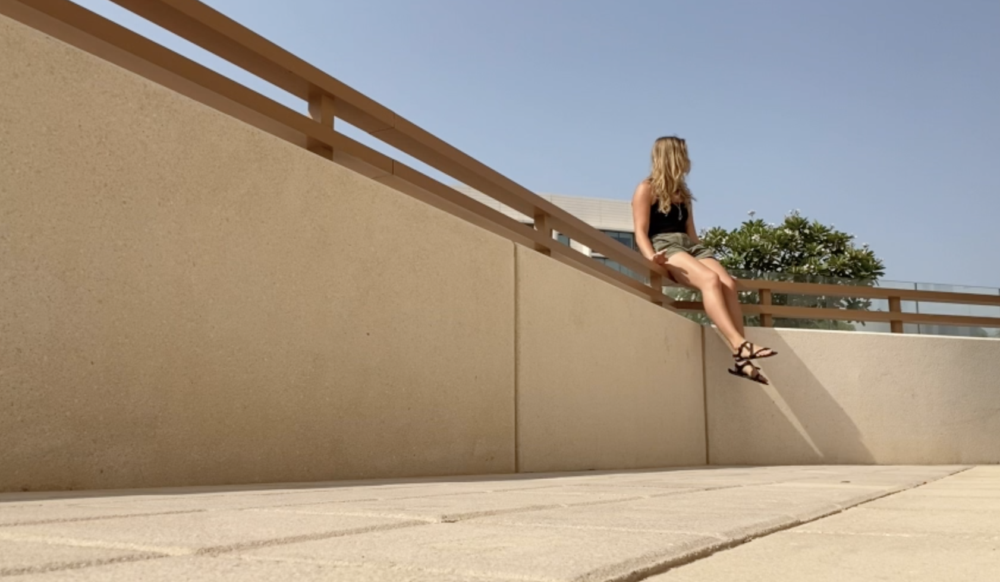

Ever been locked out? On a 40 degree day in Abu Dhabi, the feeling is both frustrating and relatable.
This film explores how a day can completely flip when a small mistake is made. Enjoy clips of a beautiful
campus with a gripping plot. This film will have you on your feet and gripping your room key.
LOCKED
>
DESIGN PROCESS
Though I'm not a great filmmaker, I grew very fond of the process of editing the video and
designing a website to accompany the film. I'm a big fan of dark backgrounds, which make the
film pop when the website is loaded. However, I wanted the website to reflect some of the
lighter colors in the film: namely the iconic blue Abu Dhabi skies. Blending the softness
of the film with the dark background was actually fairly difficult. I'm not sure I ever nailed it,
but searching color schemes and CSS profiles taught me a lot about design. At the end, I decided
to stick to a very playful and energetic color palette. I've included neon signs and other effects
that make these elements pop.
"Woah! Eye opening and relatable.
Finally a film for me."
"I loved the choice of music and
the cast. Heartwarming."
"The story gripped me. Looking forward
to what she makes next."
"Kind of looks like it was shot
on an iPhone."
They say filming is a grueling process, and this was no exception.
This ninety second film was edited down from an astonishing five minutes of content
shot over 20 whole minutes. Editing through all five minutes took nearly an hour,
shattering records for the most heavily and meticulous editing process in the history
of film. Several clips didn't even make it into the final product.
The site itself took several iterations. Following many wireframe drafts, I was eventually
able to find a design that you see here: simple, clean, and clear. Working with CSS and HTML was
clean and simple, but Javascript took a while to work with.
BEHIND THE SCENES
